Diğer Rotalar · 31 Aralık 2017
Isbıdın Kaya Oyma Kiliseleri
Isbıdın’da yer alan ve içerisindeki harika freskler ile dikkat çeken bir kaya kiliseden daha önce bahsetmiştim.
Bu yazımda, yine Isbıdın’da yer alan, yukarıdaki kiliseden ayrı olarak toplam 6 adet kaya oyma kiliseden bahsedeceğim.
Aşağıda fotoğraflarını göreceğiniz kiliselerden dördü birbirine çok yakın, iki tanesi ise sırt sırta, kiliselerden bir tanesinin ise ayrı ayrı iki apsisi ve altarı bulunuyor.
Kiliseler çoğunlukla harap durumda, iki tanesinde çok az miktarda kırmızı boyalı duvar süslemesi yer alıyor.
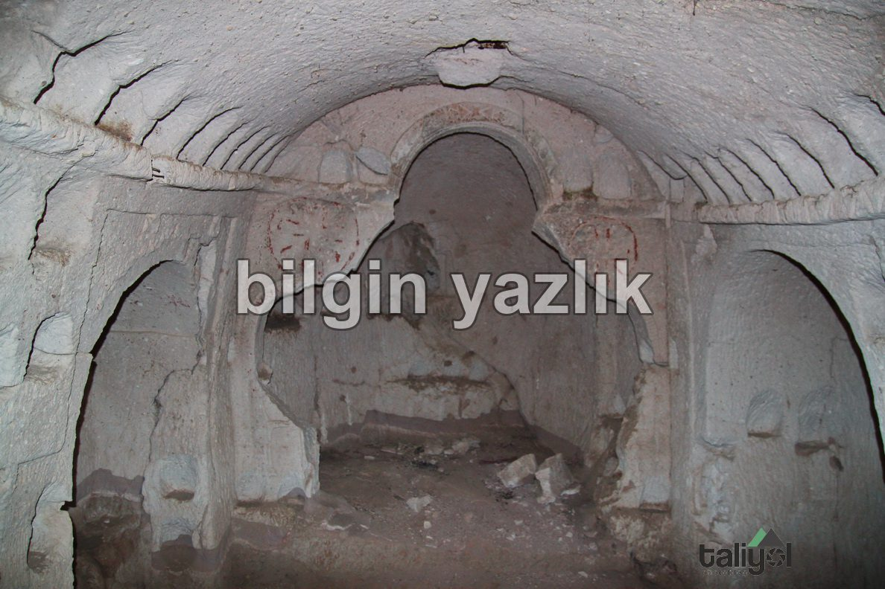
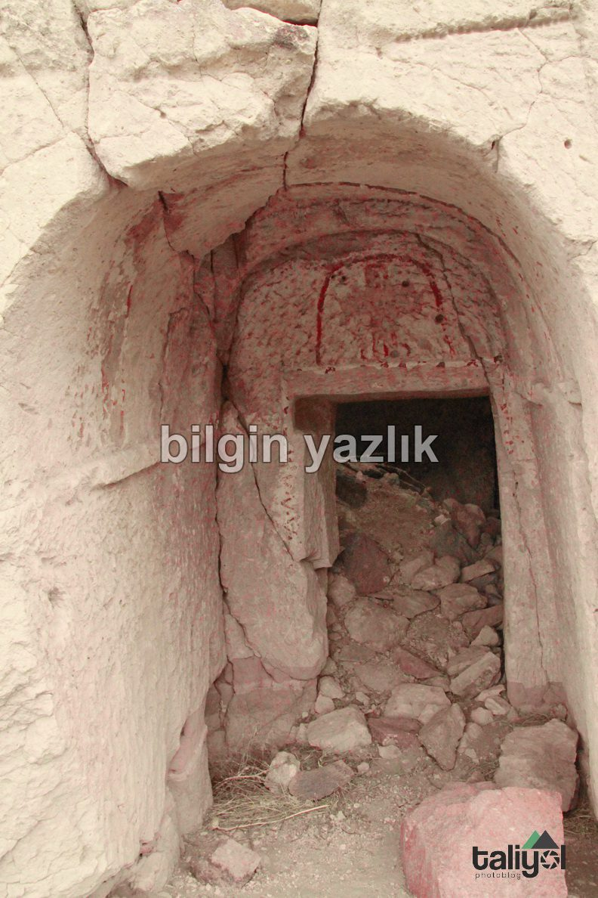
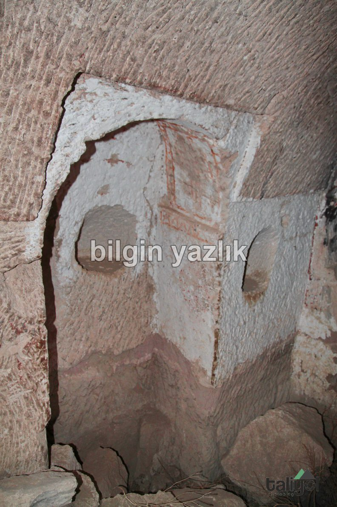
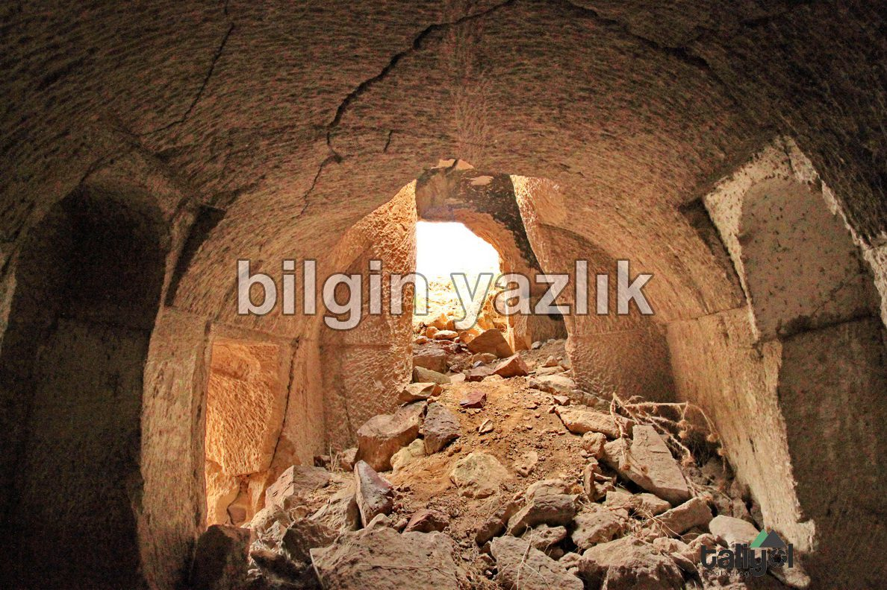
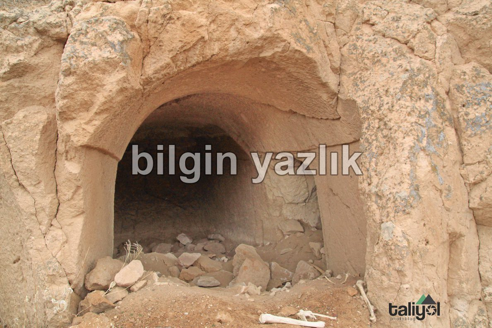
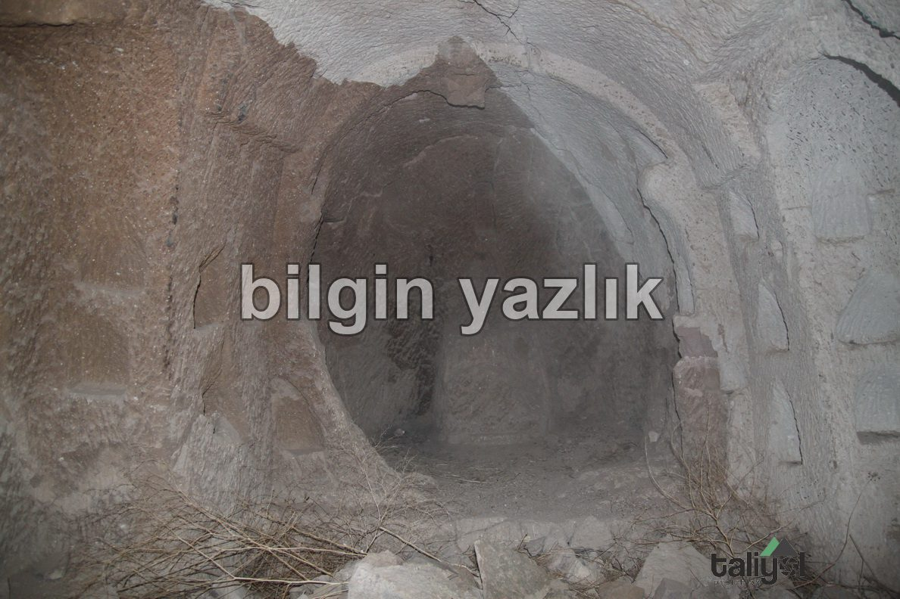
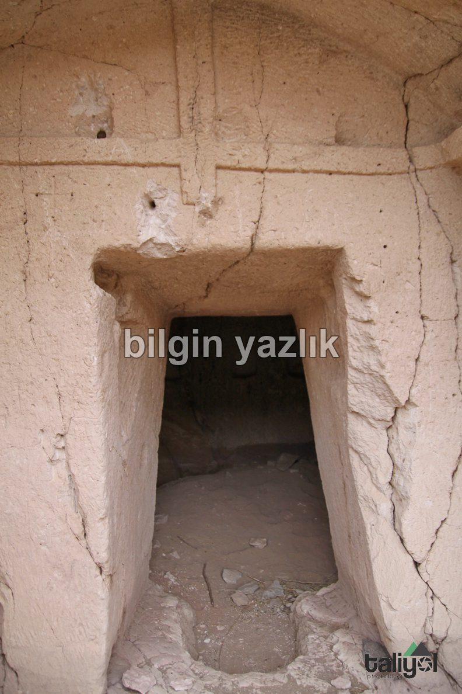
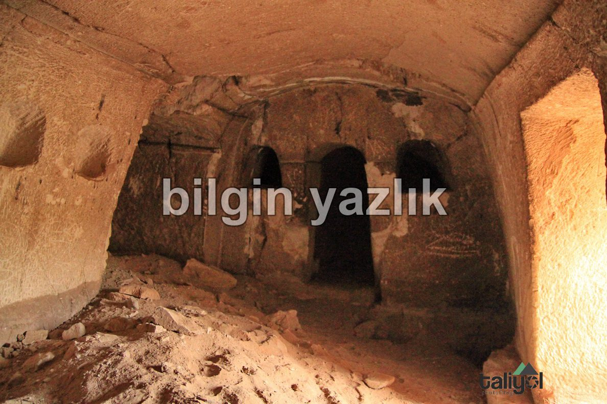
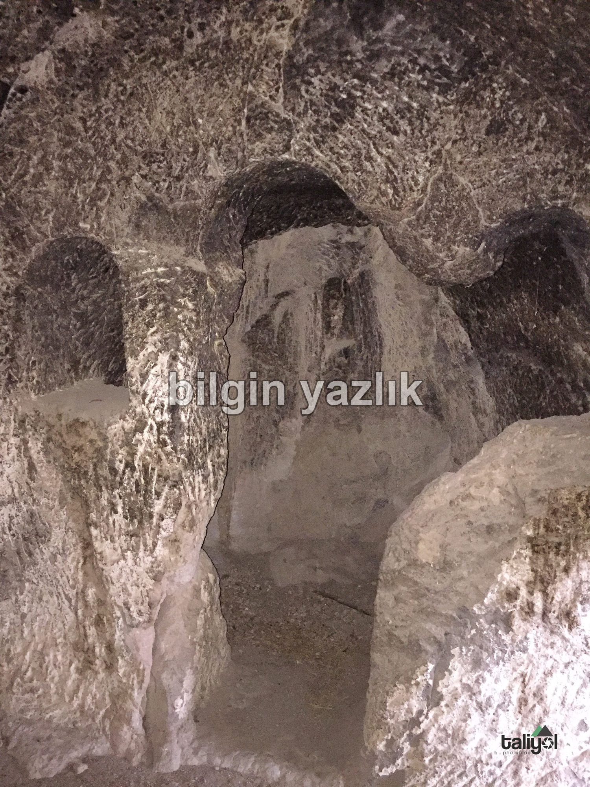
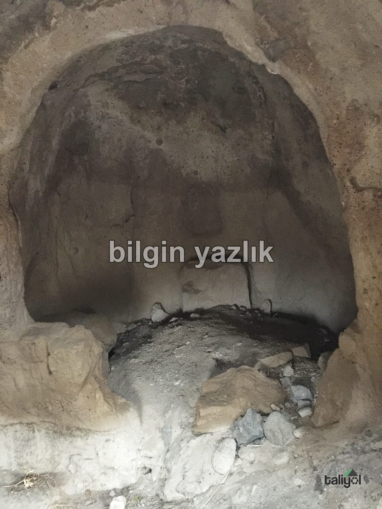
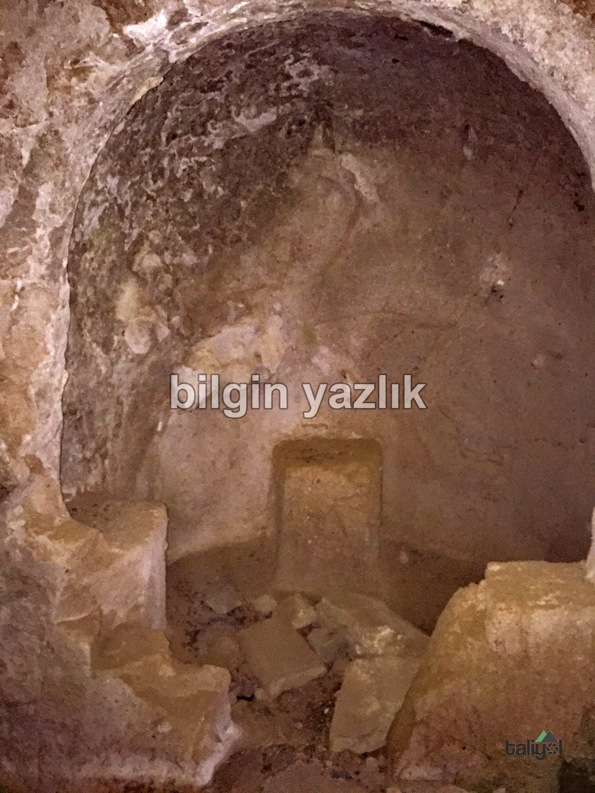
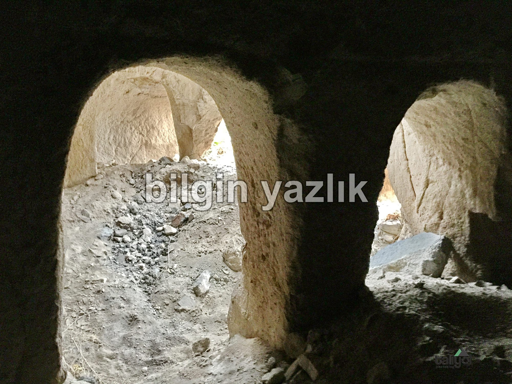
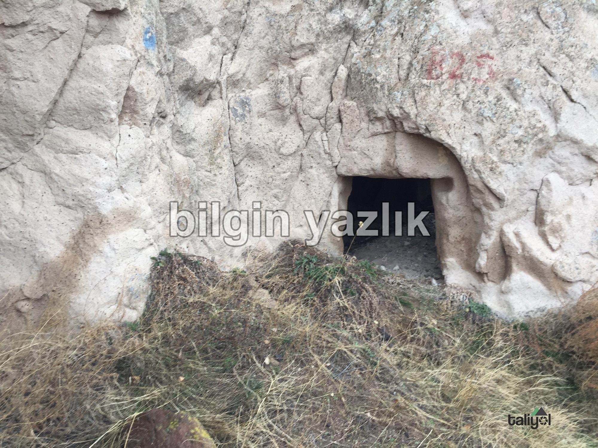
Bu yazı taliyol arşivinden taşınmıştır. · özgün kayıt